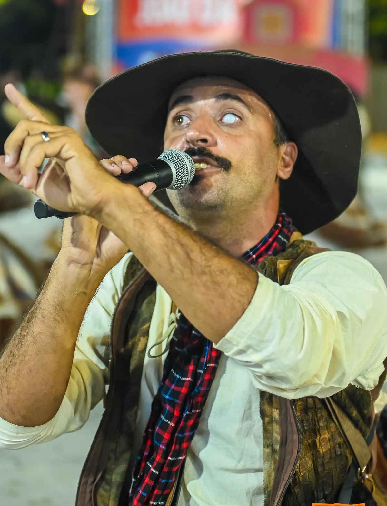

Coisas da Roça
A Quadrilha Coisas da Roça é de Paranoá/DF e completa 33 anos de história em 2026.
SOBRE A QUADRILHA
A Quadrilha Coisas da Roça é de Paranoá/DF e completa 33 anos de história em 2026. Ao longo do tempo, se tornou referência em festivais e apresentações pelo Brasil, reunindo crianças, jovens e adultos em torno da cultura popular nordestina e do São João. O grupo é conhecido pelo humor, pela energia em quadra e pela criatividade, transformando cada espetáculo em uma experiência teatral e cultural única.
Tema 2025: "O Auto da Compadecida – Um Romance Mêi Coisado".
Com elenco amplo, figurinos que combinam tons terrosos, cores vibrantes e elementos cênicos inspirados em personagens do sertão, a Coisas da Roça mistura tradição, circo e teatro popular. Representando a comunidade no circuito do DF e Entorno, o grupo mantém viva a essência nordestina e a alegria do forró, conectando gerações e reforçando o vínculo com a cultura local.
Histórico no Circuito
| Ano | Grupo | Posição | Pontuação total |
|---|---|---|---|
| 2025 | Especial | 14º | 621,9 |
| 2024 | Especial | 12º | 829,6 |
| 2023 | Especial | 10º | 532,7 |
| 2022 | Acesso | 5º | 710,2 |